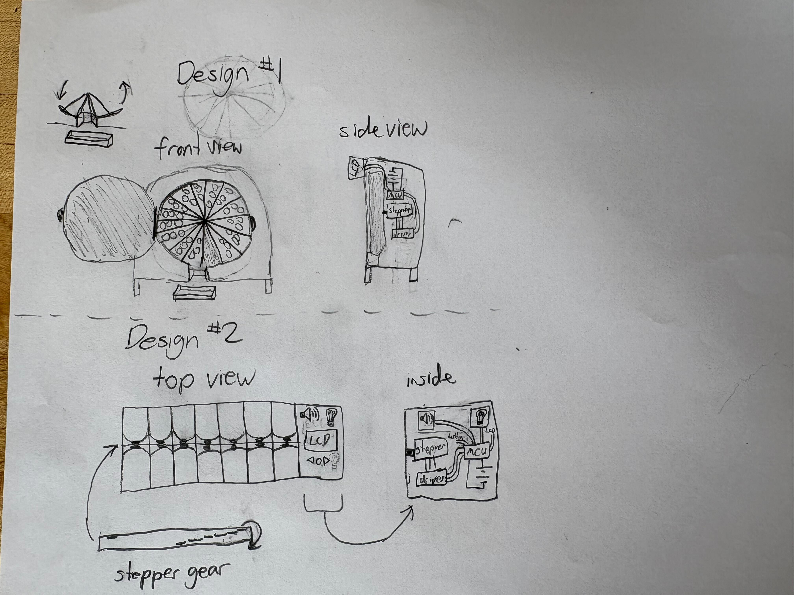
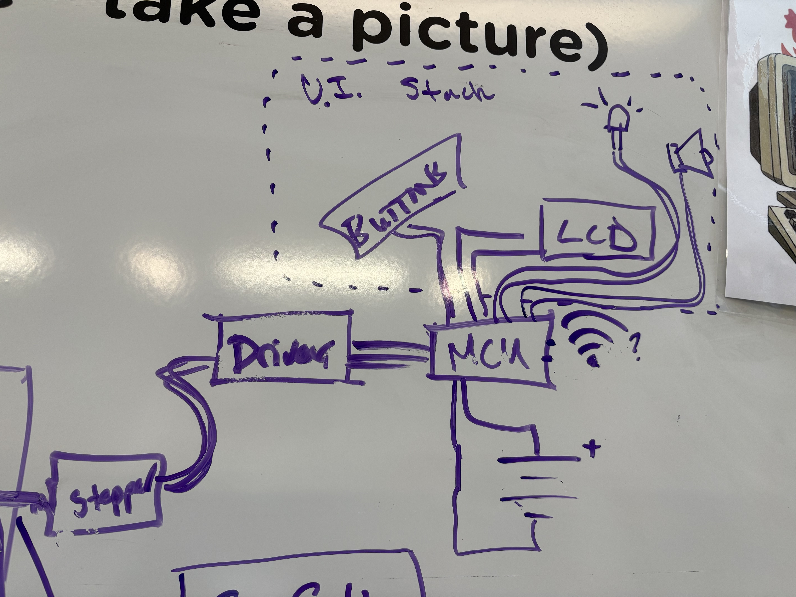

Affordable Timed Pill Dispenser
Problem Statement - Currently, older adults with dementia or general memory issues struggle to remember to take their medications and manage multiple medications. This means that these individuals may not take their medications at the correct times or at all and might need help from a caretaker. We want these individuals to be able to manage their medications independently and have confidence in themselves.
Problem Definition & Brainstorming:

The following outlines the dcesign process used to develop this project, including identifying key user needs, forming insights, and generating potential solutions. It reflects how initial observations were translated into guiding questions and early design ideas, leading toward a final concept.
- Thematic Analysis & Resulting Themes - Through analyzing user needs and challenges, several key themes emerged around medication management. These included forgetfulness, the complexity of managing multiple medications, the desire for independence, and accessibility concerns such as declining hearing. These themes guided the direction of the design process and helped identify the most important problems to address.
- Insight Statements
- People often forget to take their medications or cannot remember if they have already taken them.
- Many individuals are required to take multiple medications at different times throughout the day.
- Users value independence and want to manage their medications without relying on others.
- Older adults may have additional challenges, such as declining hearing, which can affect traditional reminder systems.
- People often forget to take their medications or cannot remember if they have already taken them.
- Many individuals are required to take multiple medications at different times throughout the day.
- Users value independence and want to manage their medications without relying on others.
- Older adults may have additional challenges, such as declining hearing, which can affect traditional reminder systems.
- How might we integrate medication reminders directly with storage containers?
- How might we simplify the process of preparing and organizing medications?
- How might we support users in maintaining independence when managing their medications?
- How might we support users in maintaining independence when managing their medications?
- First Idea (box) - Having 14 rows, with two columns each for night and day. Which shoud be connected to some kind of mechanism that has a sound system for a reminder, and timer or clock connected to the internet to set medication times.
- Second Idea (cirular) - Having a circle divided in to 14 compartments which include day and night alternating. The idea is to have it like a circular rollercoaster, having it connect to a timer and for each timer set by the user to dispenser the medication. Then after all 14
- Second Idea (cirular) - Having a circle divided in to 14 compartments which include day and night alternating. The idea is to have it like a circular rollercoaster, having it connect to a timer and for each timer set by the user to dispenser the medication. Then after all 14
Research & Problem Framing

This section outlines the research and problem framing behind the project, including understanding the user need, evaluating existing solutions, and defining key features and goals. It reflects how background research and design thinking were used to guide the development of a focused and practical solution.
- TBackground Research & Existing Solutions
- Existing Solutions (Commericial) -
- Manual Pill Organizers:
- Basic containers with compartments (daily/weekly)
- No automation or reminders
- User must remember to take medication
- Click here to see an example of this product
- Basic containers with compartments (daily/weekly)
- No automation or reminders
- User must remember to take medication
- Click here to see an example of this product
- Built-in clock and programmable schedule
- Rotating compartments for dispensing pills
- Audible alarms (beeping) and sometimes flashing lights
- LCD screen for time and settings
- Can dispense multiple times per day
- Smart / Connected Pill Dispensers
- Wi-Fi or Bluetooth enabled
- Click here to see an example of this product
- Sends reminders and notifications to users or caregivers
- Tracks medication usage (adherence)
- Often includes locking mechanisms for safety
- Alarm-Only Reminder Devices
- Provides alerts via sound, vibration, or light
- No pill storage or dispensing
- Includes watches, phone apps, or small timer devices
- Click here to see an example of this product
- Basic containers with compartments (daily/weekly)
- No automation or reminders
- User must remember to take medication
- Click here to see an example of this product
- Built-in clock and programmable schedule
- Rotating compartments for dispensing pills
- Audible alarms (beeping) and sometimes flashing lights
- LCD screen for time and settings
- Can dispense multiple times per day
- Smart / Connected Pill Dispensers
- Wi-Fi or Bluetooth enabled
- Click here to see an example of this product